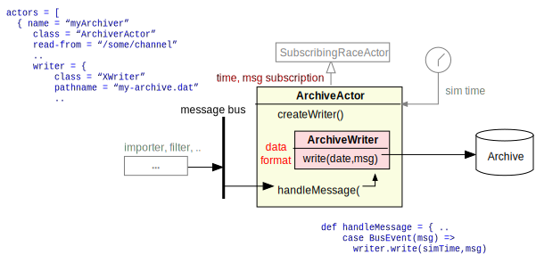
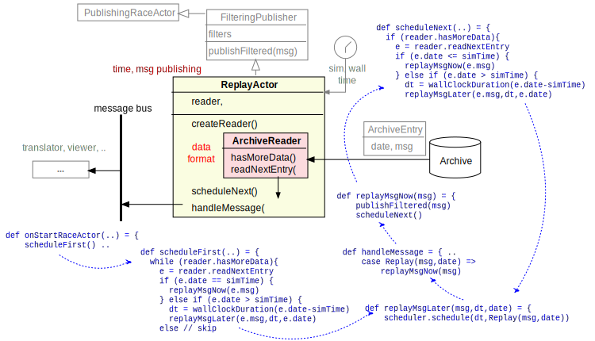
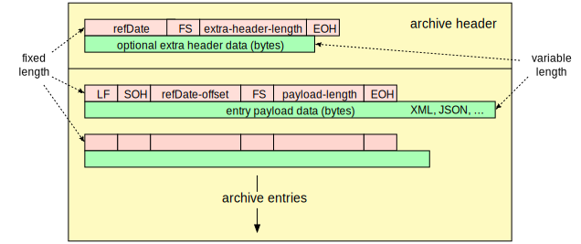

Archive and Replay
Archive- and ReplayActors are similar to Export- and ImportActors (see Connecting External Systems), and can in fact be seen as a local persistency export/import that uses the same layer partitioning: actors being responsible for connectivity and time, and embedded writer/reader objects being responsible for data format and RACE-external IO.
It is therefore common to have RACE Runtime Configuration files that have archive and replay variants of their live counterparts. Archive configs normally add ArchiveActors for selected RACE input channels (e.g. to store SWIM XML messages). Replay configs replace Import- with ReplayActors.
Archive
gov.nasa.race.actor.ArchiveActor is the more simple type. This is a typical SubscribingRaceActor
for which there is little reason of subtyping other than perhaps hard-wiring respective
ArchiveWriter types (which can be seen as syntactic sugar for RACE configs).
The main purpose of ArchiveActor is to provide the RaceActor context that:
- instantiates a configured, embedded
ArchiveWriterobject - subscribes to RACE channels that should be archived
- calls the
ArchiveWriterfrom itshandleMessagemethod with the message payload data

The protected createWriter method can be overridden in subtypes to hardwire writer types. The
standard implementation reads the ArchiveActor config file to extract the writer sub-config.
Most writers that come with RACE are for basic input data such as XML messages, i.e. writers treat
the payload data as un-structured text that is wrapped into begin/end markers which also record
the simulation time stamp when the message was archived (e.g. gov.nasa.race.archive.TextArchiveWriter).
However, writers can also store binary data and omit extra time stamps if the payload already
contains one (see gov.nasa.race.air.BinaryFlightPosArchiver example).
While specialized ArchiveWriters could also perform tasks such as filtering or translation,
this is better left for dedicated actors since there is little to be gained by saving actors at the
end of the message processing chain (as opposed to including filters inside the import/replay actor,
which is the beginning of the chain).
Replay
gov.nasa.race.actor.ReplayActor is the more complex actor type, due to embedded filtering, lookup
of replay points inside of archives, and scheduling of replay events according to their archive
time stamps.
Filtering is done by extending FilteringPublisher, which in turn instantiates the filter objects
from the actor config. It makes sense to use embedded filters in case only few events from a
otherwise large stream are replayed (e.g. only a few aircraft from a full SFDPS SWIM channel), to
avoid importing high volume/rate data that is just filtered out by downstream FilterActors (which
incurs the context switching between actors). The exception to this rule is if the filtering
process itself is computationally expensive (more so than context switching) and can be effectively
parallelized (e.g. by means of a Dispatcher).

Again, the stock ReplayActor is usually just sub-typed to hard-wire its ArchiveReader by
overriding the createReader() method.
During the RaceActor initialization phase the ReplayActor uses the ArchiveReader to extract
the first ArchiveEntry from the archive file that has a time stamp greater or equal the
configured simulation start time. There is also a optional boolean can-reset-clock config value
that can be used to request a simulation time reset according to the first time stamp encountered
in the archive, but this should only be used by one replay actor and might fail if other actors
do not support a clock reset.
Upon receiving the StartRaceActor system event the ReplayActor schedules its first event
by calculating the respective wall clock time for the replay from the duration between current and
event simulation time (which might involve both offset and timescale factor).
When the scheduler send the corresponding Replay event, the actor's handleMessage() passes
the payload on to a replayMessageNow() message, which is the filtering/publishing point. After
publishing to the configured RACE channel(s) this method calls scheduleNext(), which uses the
reader to retrieve the next ArchiveEntry (if any) and closes the replay loop by scheduling the
event according to its time stamp.
It should be noted that the ReplayActor only skips events at the beginning of the stream, if
their time stamps precede the simulation start time. Once the actor starts replaying it
processes all archived events until the archive is either exhausted or RACE is shut down. This
reflects the principle that data consistency is rated higher than minimizing the difference between
archived and actual replay simulation time. The rationale is that replay latency is usually <50msec
and archived streams are not deterministic to begin with (involve network IO) - RACE is not supposed
to be a hard-realtime environment.
Archive Formats
The above actors are agnostic with respect to the archive formats used by configured writers/readers,
the only requirement being that a replay has to use a ArchiveReader that is compatible with
the ArchiveWriter which created the archive.
Some data sources such as CSV streams do not warrant a specific archive format, i.e. writers directly store the payload data without any additional formatting.
However, most of external RACE inputs are variable length text messages in payload formats such as JSON or XML. To avoid per-message-type readers that have to do expensive parsing of archive contents to extract and publish payload data, RACE uses a payload agnostic tagged archive meta-format that consists of fixed length archive- and entry- headers followed by variable length payload entry data bytes

Archive headers can optionally contain schema data to verify writer/reader compatibility. Entry headers contain the byte length of the immediately following entry payload data and thus allow for efficient extraction of payload data from compressed archives without the need for additional buffers.
The archive header also stores the reference date as millisecond epoch value (using a 16 char hex format). Each entry header contains a 8 char hex value with the millisecond offset to this reference date from which the replay time can be computed. This not only reduces entry header size but also allows to easily re-base the archive entry replay times.
TaggedArchiveReader` and TaggedArchiveWriter implementations can be found in the
gov.nasa.race.archive package and usually can be used as-is, the exception being
concrete implementations of ParsingArchiveReader that directly translate payload messages.
Translating readers are an effective optimization to avoid String or byte array allocation for
the sole purpose of passing payload messages from ReplayActors to TranslatorActors.